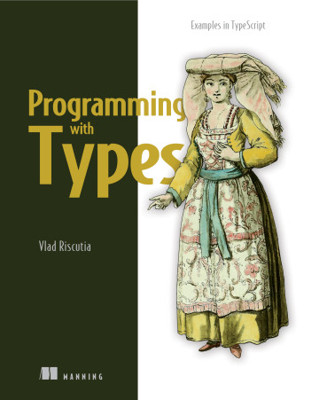

Books
Data Engineering on Azure
Data Engineering on Azure reveals the architectural, operational, and data management techniques that power cloud-based data infrastructure built on the Microsoft Azure platform.
Excerpts
- Changing data classification through processing
- Ingesting data
- Machine Learning on Azure - part 1
- Machine Learning on Azure - part 2
- Machine Learning on Azure - part 3
Programming with Types
Programming with Types teaches you to design safe, resilient, correct software that's easy to maintain and understand by taking advantage of the power of strong type systems.
Excerpts
- A switchless state machine
- Common algorithms
- Higher kinded types: functors
- Higher kinded types: monads
- Variance
Articles
For Data Science @ Microsoft
- How we built self-serve data environment tools with Azure
- Azure Data Explorer at the Azure business scale
- Running machine learning at scale
- Common data engineering challenges and their solutions
- Partnering for data quality
- Partnering for metadata management
- Data distribution
Computability Series
Work-in-progress series on computability on my blog.